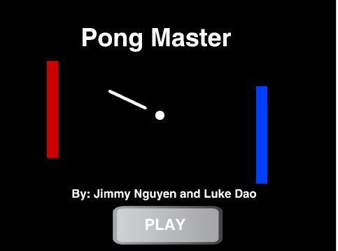
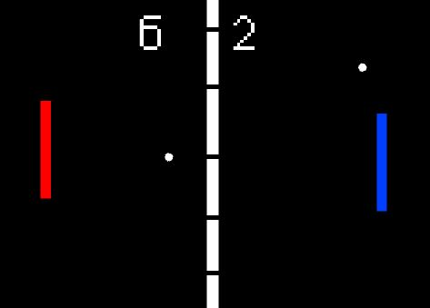
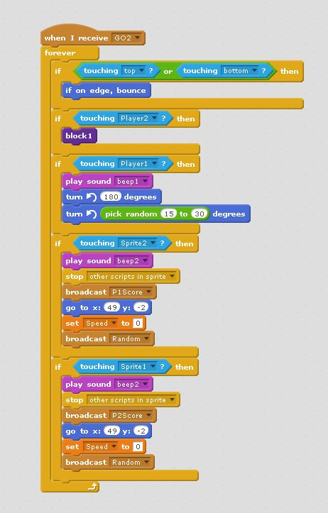
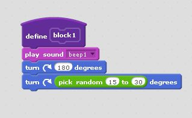
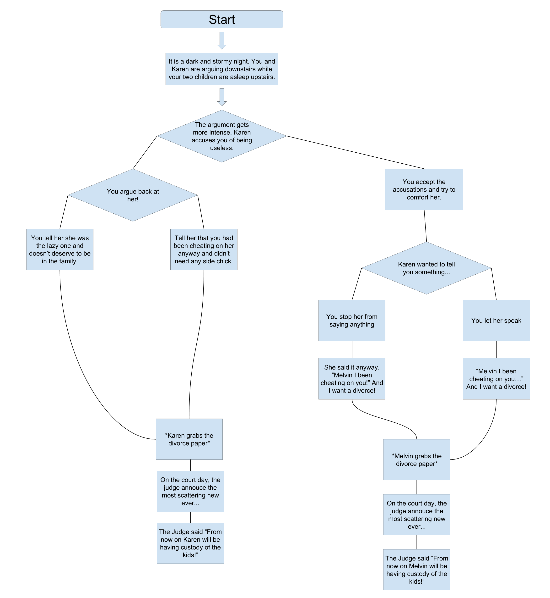

Portfolio
Pong MasterThe Lovers' Quarrel
Game Project: Pong Master

Press Here to Play
Description
The game is to be played by two people, with one using the arrow keys to navigate and the other using the WASD keys. The goal is to use your paddle to hit the ball into the other person's wall, which will then give you a point. Once one of the players reaches a score of 10, the game will stop and the winner will be anounced. We coded our game so that when the ball sprite touches the sprite at the other end of the map, the costume of the score will change by one. Randomness occurs when we use a random number generator to help contribute to the path of the ball sprite. The game gets more difficult once a second ball appears after a given amount of time.
Reflection
My partner and I originally wanted to create a Mario inspired game, but once we saw how complicated it was going to be, we opted out for a somehat simpler game. A few strengths of our creative process included a steady flow of good ideas and a willingness to listen to the suggestions of others. A few problems we encountered included not having enough time and not being efficient with the little time we already had. We overcame these challeneges by working harder both at school and at home. If i had more time, I think I could have be able to make the game more complex, such as by adding specialized maps/levels and possibly even level-ups and health bars.


This algorithm is for the ball, and it determines the movement of it and what to do once the player scores a point. If the ball is touching the top or the bottom, then it will bounce in a random direction. When the ball hits the paddle, it will glide at a randomly chosen angle. And if it touches the left or right side of the screen, one of the players will gain a point.
Story Project: The Lovers' Quarrel
Description
In this story, you and your wife Karen argue about who is the worst parent. Tea will be spilled as your deepest secrets are revealed. Be mindful of your decisions, for they may determine who wins custody of your beloved children.
Reflection
An example of an incremental development process within my program is when a choice requires a user-inputted response, in this case a letter, and results in the display of a different function which has already been defined. This creates a series of linked functions. An example of an iteration within my program is when the user inputs a response which does not fit the conditions and is subsequently asked to reenter another response until the criteria is met. A difficulty I encountered was navigating through the web of different functions and function names, since my partner and I worked on these during different times of the day. There were times when we accidentally named one of our functions the same thing as another, which caused our code to not work correctly. I resolved this matter by reading each and every one of Jimmy's function names in an effort to make sure my function names were different. It all ended up working out in the end with no major problems.
Organizing the scenes of my story into functions is a form of procedural abstraction because the program displays the lines and phrases for the user, but the user does not know
how it happened. One benefit of this is that the function's name gives the reader a very rough idea on its purpose without being too specific while we the creators should know exactly
what each line does.
A story I really enjoyed was Brady's. I liked his story because no matter which decision you made, the parents will end up dying no matter what. I found that to be funny. Another story I liked was Loc's. His story was far too long for anyone to read and I am convinced that he and his partner copy and pasted most of the text. However, the parts of his story that I did manage to read were enjoyable, so I assume the remainder of his story is just as interesting.